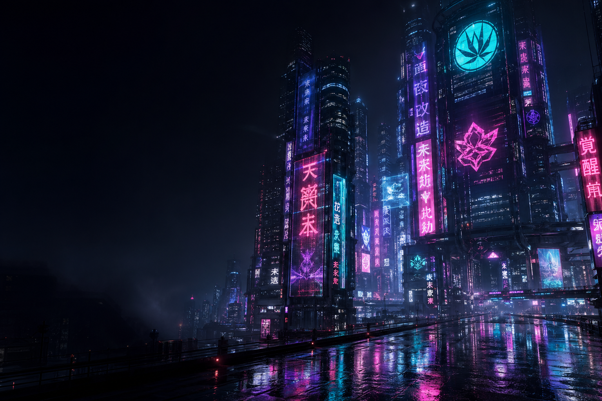
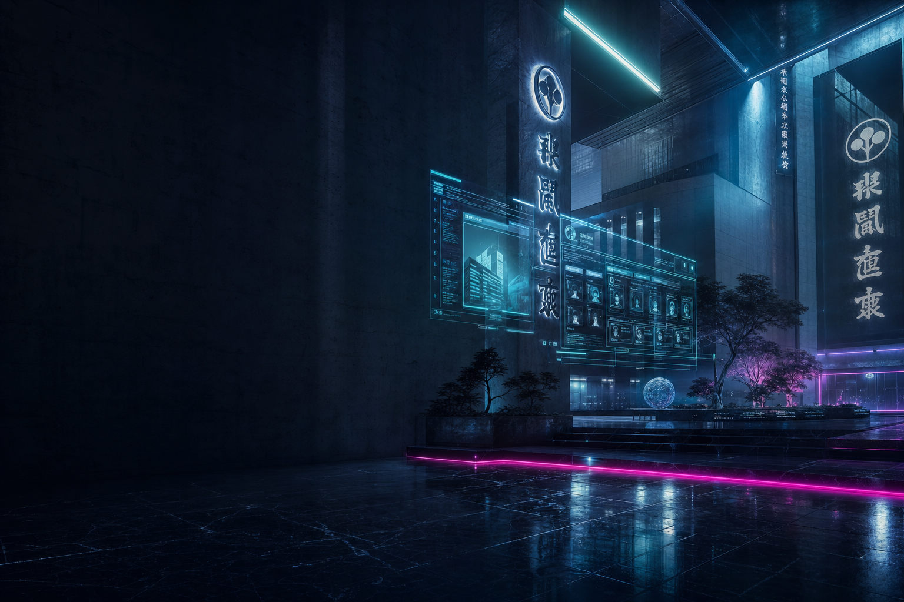
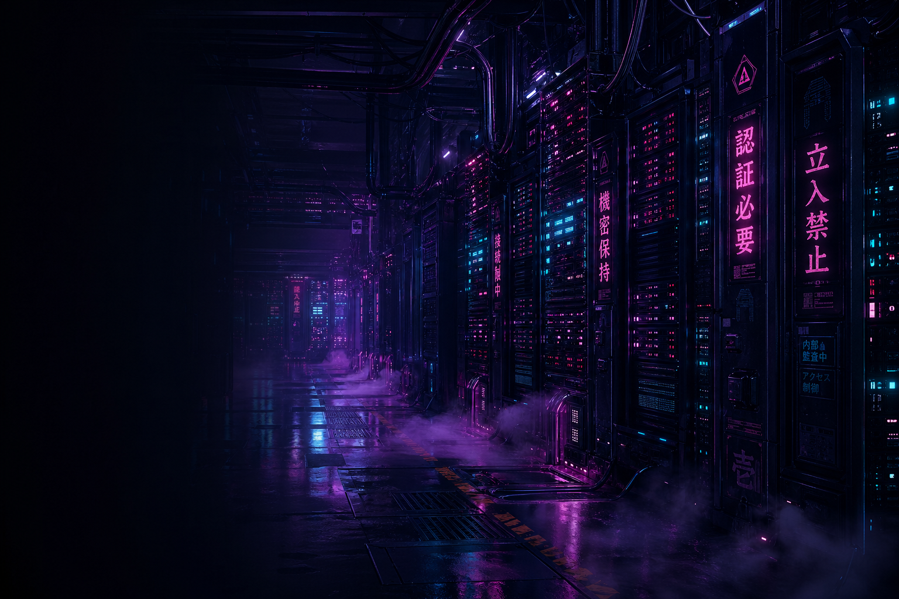
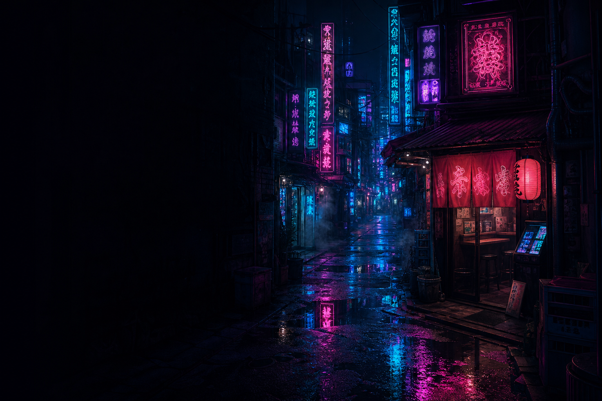

MARTY SCHNEIDER
DevSecOps · Secure CI/CD · Application security in the pipeline
15+ years shipping under pressure—now focused on gates that catch risk before production: scanners, policy, and workflows developers can live with.

CLEARANCE DOSSIER
I work where code meets policy: embedding security in CI so bad commits fail fast—SAST, SCA, secrets, containers, IaC checks—without turning the pipeline into a paperweight. Policy-as-code, clear exemptions, and metrics leadership actually reads beat heroics after merge. Earlier depth in SOC and IR means I still speak fluent alert fatigue; today I prefer preventing the incident.
CAREER PIPELINE
Current focus: DevSecOps—securing builds, dependencies, and release paths. Prior roles built the detection-and-response muscle that informs what belongs in a gate versus what belongs in the SOC.
Software Engineering Intern, Security and Compliance — Bear Robotics (2026–Present)
- Maintain and improve open source compliance workflows built on FOSSlight—process hygiene and tooling fit for engineering scale
- Research and evaluate alternative FOSS compliance tools; deliver recommendations to improve or replace the current stack
- Reduce manual work through documentation, automation, and clearer process handoffs
- Monitor output from the SAST toolchain; triage findings, escalate critical issues, and route ownership to the right teams
- Track vulnerabilities from intake through remediation with visible accountability
- Document findings and communicate status to both technical and non-technical stakeholders
Community Jr. SOC Analyst — Level Effect (2025–Present)
- Real-time alert triage across 100+ student environments—pattern recognition for what “noisy but benign” looks like in automation
- Endpoint forensics and MITRE-mapped incident response—feeds the same mental model used to tune severity in CI findings

SEC ENGINEERING / ARTIFACTS
Cybersecurity Report Generator
TypeScript automation that turns IOCs and CVE context into structured reports—same “pipeline output” mindset as security tooling in CI.

SECURE SDLC TERMINAL
A small interactive shell. Type help for commands.